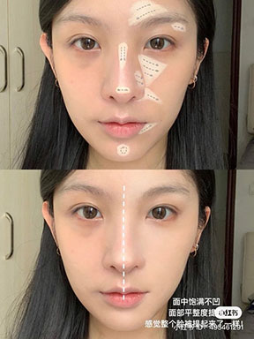
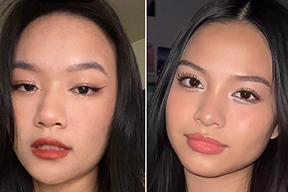
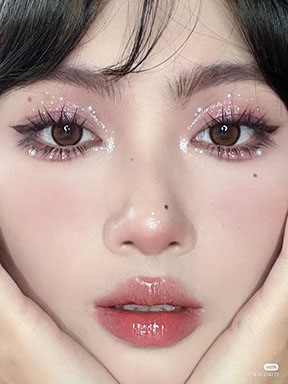
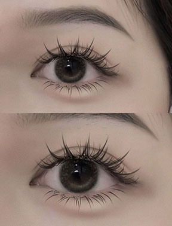
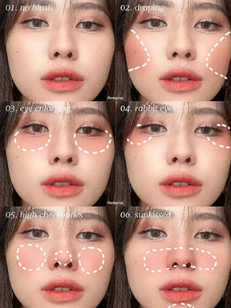
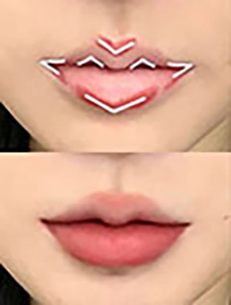

Douyin

What is Douyin Makup?
Douyin is a type of Chinese makeup style that got popular with Tiktok's sister app, "Douyin".
The key to the look is all about your eyes!
How to Get The Look!
Foundation
Foundation
Sheer foundation

For your douyin look, you can use a matte foundation to get a matte look. This way it will help blurr out any pores and unwanted can do a matt finish or a light barely-there foundation finish.
Eyebrows
When doing your eyebrows, you want to follow the natural curves of your eyebrows. You would also want to fluff your eyebrows to make it look like they are full.
Eyes
Using eyeshadow pallettes and creating ombre shades on your lids will enhance your eyes to be bigger or narrower. By using a duo chrome-shimmer product can make your eyes stand out more. Placing the glitter on the center of your lid and other strategically placed areas would enhance the feature of your eyes.After adding your eyeshadow, your wing eyeliner is important because they draw the attention to your eyes. Depending on its shape you can make it thick or thin to however you like.
Eyelashes
The eyelashes are very important to completing the look because with manhua lashes to can get a beautiful dramatic look that can make you look like a doll come to life. You can also add some color contacts to make your look more complete.
Blush
The right kind of color on your cheek will lenthen or widen your face shape depending on where you place your blush. In douyin, make sure to get a strong blush color though, and you would usually place your blush under your eyes and on your temple. Some would also place it on the chin and nose for a more flushed look.It would also make the look more ethereal.
Lips
For your lips, you want to have a soft color that matches the tone of your lips, a product that enhace the undertones of the lips, or a slightly darker shade to make your lips look plump. You can also diffuse the edges of your lips to make them less sharp.
